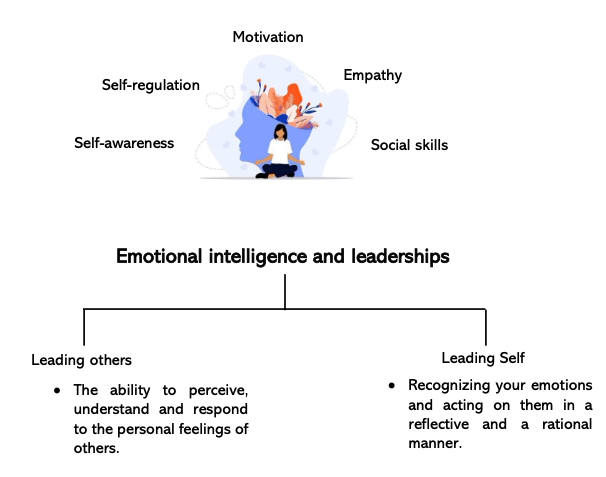
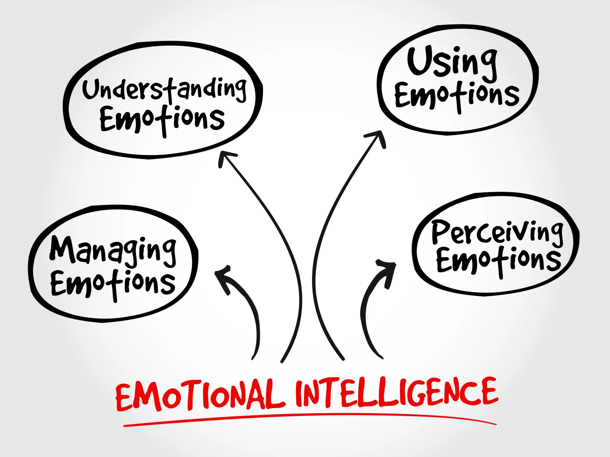
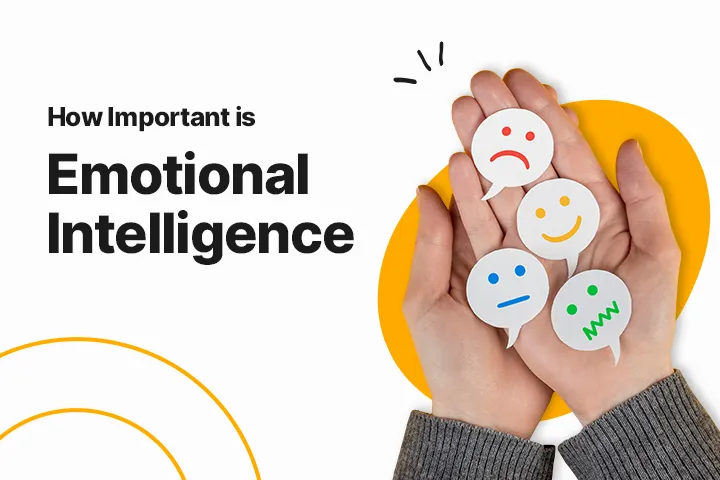

Emotional Interlligence

Emotional Interlligence Module Conducted by Mrs. Hubika Joshi
Discover the transformative power of Emotional Intelligence in a compelling lecture conducted by Hubika Joshi. This session delves into the art of understanding and managing emotions to build meaningful relationships, foster self-awareness, and enhance decision-making. Hubika Joshi's expert insights and practical strategies empower you to navigate personal and professional challenges with confidence, paving the way for growth and success.
Emotional Interlligence
motional Intelligence is the ability to understand, manage, and harness emotions effectively to foster meaningful connections, make thoughtful decisions, and navigate challenges with resilience. It combines self-awareness, empathy, and interpersonal skills, empowering individuals to thrive both personally and professionally. Mastering Emotional Intelligence opens the door to stronger relationships, enhanced leadership, and a deeper understanding of oneself and others.
Emotional Intelligence has a profound impact on undergraduate students
shaping their personal and academic journeys. By fostering self-awareness, students can better manage stress, adapt to challenges, and maintain a healthy balance between their studies and personal life. Enhanced empathy and interpersonal skills improve teamwork and collaboration, which are crucial for group projects and campus activities. Moreover, Emotional Intelligence prepares students for future leadership roles, enabling them to build meaningful relationships, make thoughtful decisions, and excel in their careers. It empowers undergraduates to navigate the complexities of college life with confidence and resilience, paving the way for lifelong success.
Key skills to develop Emotional Intelligence
- Perceive emotions in oneself and others.
- Understanding emotional meaning
- Use emotions to facilitate thinking
- Managing emotions.
Emotional Intelligence
what I learn
- Self-Awareness
- Mindfulness
- Empathy
- Social Skills
- Leadership
Data collection tools
- Observations
- Interviews (Semi-structured, structured, unstructured)
- Questionnaires (Semi-structured, unstructured)
- Journal entries
Emotional Intelligence plays a crucial role in the lives of undergraduate computer science students, profoundly influencing their academic, personal, and professional journeys. In university life, it helps students manage the stress of demanding assignments and tight deadlines, enhancing focus and resilience. Strong self-awareness and emotional regulation empower them to tackle complex coding challenges and collaborate effectively on group projects.
Looking ahead, Emotional Intelligence becomes a key differentiator in the job market. It equips students with the empathy and communication skills needed to thrive in team-oriented environments, bridge the gap between technical and non-technical stakeholders, and adapt to dynamic workplace challenges. By cultivating Emotional Intelligence, computer science students lay a solid foundation for excelling in their academic pursuits and future careers.
Impotance of Emotional Intelligence
Emotional Intelligence (EI) is profoundly important as it influences almost every aspect of personal and professional success. At its core, EI empowers individuals to understand and manage their emotions, fostering self-awareness and emotional regulation. This leads to better decision-making, stress management, and resilience in the face of challenges.
Quantitative Research
In interpersonal contexts, EI enhances empathy, communication, and relationship-building, allowing people to connect meaningfully with others. These skills are invaluable in teamwork, conflict resolution, and leadership.
In professional environments, EI is a critical asset for navigating workplace dynamics, adapting to change, and inspiring others. It’s increasingly recognized as a key factor in career advancement and effective leadership.Overall, emotional intelligence shapes the way we perceive, respond to, and influence the world around us, making it essential for achieving personal fulfillment and professional excellence.
